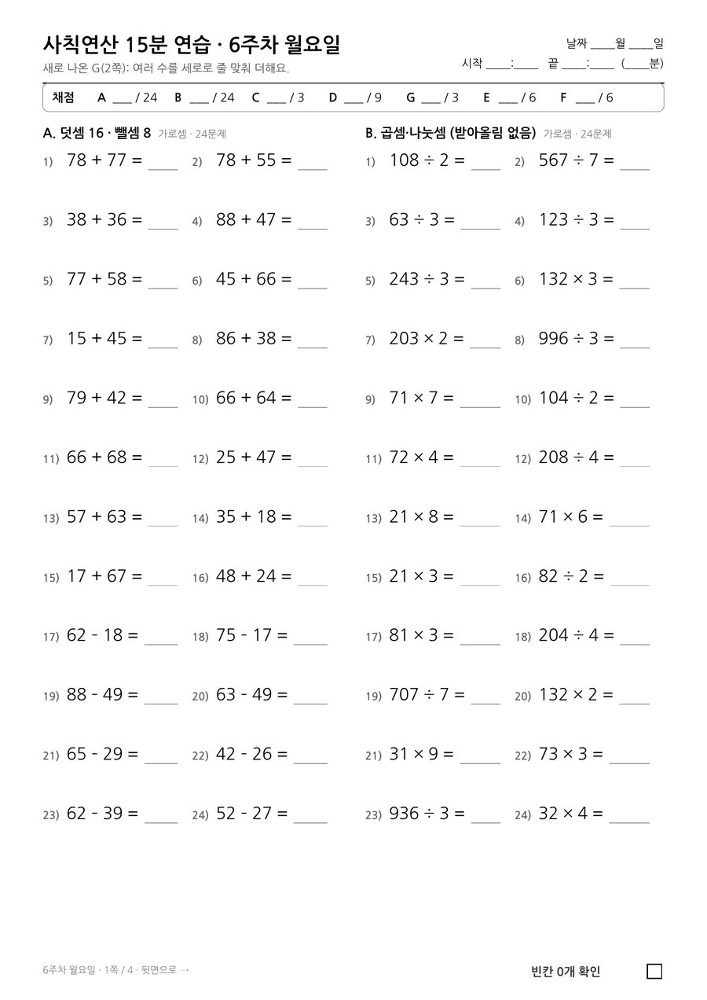
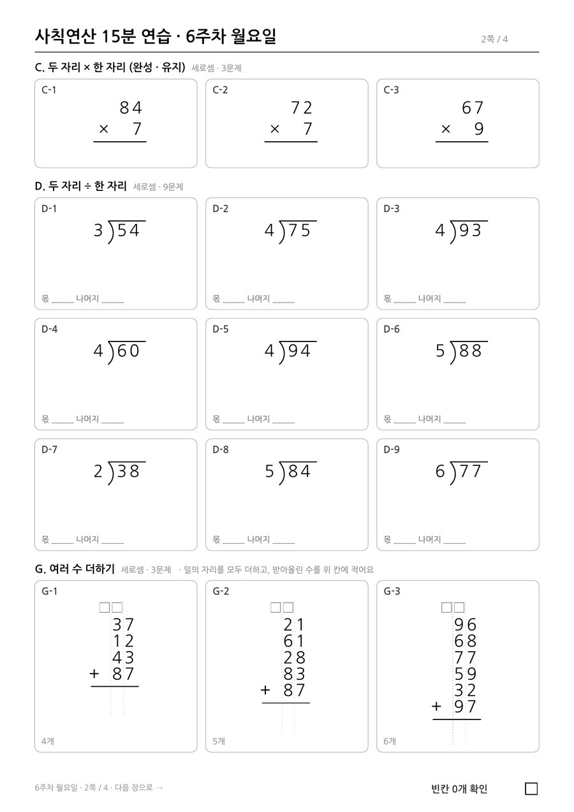
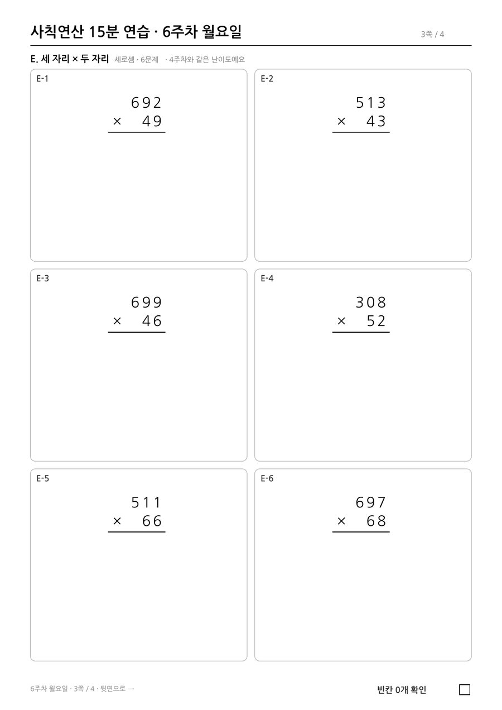
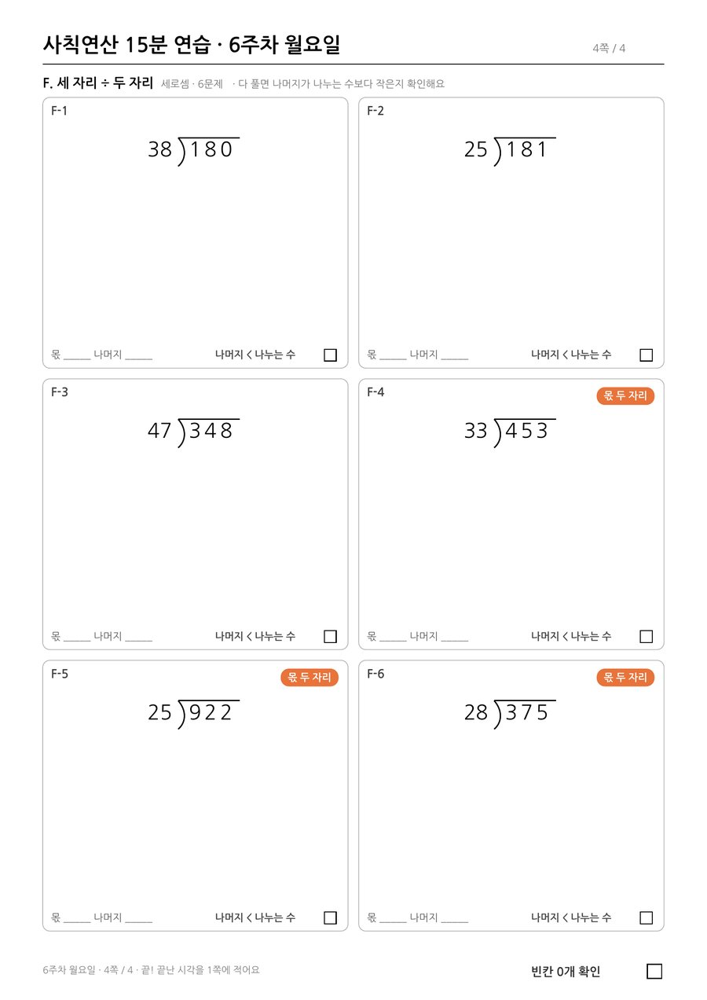

문제집의 꺾은선그래프 문제에서 7달 점수(52 + 72 + 84 + 76 + 76 + 92 + 84)를 모두 더해야 했는데, 정답 536 대신 531이 나왔어요. 세로로 줄 맞추기가 불편해서 가로로 이어 더하다가 중간에 수가 빠진 거예요. 그래서 6주차에는 여러 수를 세로로 더하는 연습을 새로 넣었어요.
| 유형 | 형식 | 문제 수 | 예시 | |
|---|---|---|---|---|
| A | 덧셈 16 (답이 세 자리 10) + 뺄셈 8 | 가로셈 | 24 | 84 + 59, 61 – 27 |
| B | 곱셈·나눗셈 (받아올림 없음) | 가로셈 | 24 | 41 × 7, 287 ÷ 7 |
| C | 두 자리 × 한 자리 (완성 · 유지) | 세로셈 | 3 | 84 × 7 |
| D | 두 자리 ÷ 한 자리 (받아내림, 나머지) | 세로셈 | 9 | 93 ÷ 4 |
| G | 여러 수 더하기 (두 자리 수 4·5·6개) | 세로셈 | 3 | 37 + 12 + 43 + 87 |
| E | 세 자리 × 두 자리 (모든 줄에 받아올림) | 세로셈 | 6 | 692 × 49 |
| F | 세 자리 ÷ 두 자리 (몫 한 자리 3 + 몫 두 자리 3) | 세로셈 | 6 | 453 ÷ 33 |
B와 D는 만들 수 있는 문제 수가 적어서 이전 주차와 일부 겹칠 수 있어요. 한 주 안에서는 겹치지 않아요.



